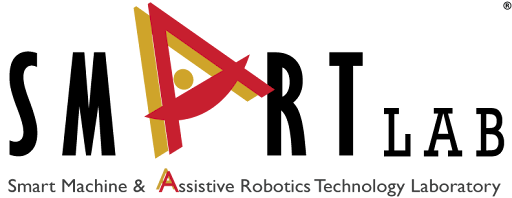

Dayoon Suh

Hi! I am Dayoon Suh.
I am a undergraduate student majoring in Data Science and Applied Statistics at Purdue University, advised by Prof. Byung-Cheol Min. My primary research interests lie in the intersection of computer vision, multimodal learning, and robot perception. Particularly, I am interested in enabling robots to perceive, reason, and interact with their surroundings in a human-like manner. In general, I am excited about the potential applications of AI in solving real-world problems.
 
News
| Feb 2025 | Received Daniels School of Business Excellence in Business Insights Award at Purdue University. |
|---|---|
| Jan 2025 | 1 paper accepted to ICRA 2025. |
| May 2024 | I will join AI & Media Lab at Sungkyunkwan University in Korea as a research intern this summer. |
| Apr 2024 | Received Mary Ann-Neel Scholarship at Purdue University. |
| Jun 2023 | Excited to join Samsung as a machine learning intern this summer! |
| Apr 2023 | Received Data Mine Corporate Partners Scholarship at Purdue University. |
| Nov 2022 | Won 5th place at Unemployment Challenge Hackathon hosted by IronHacks. |
| Apr 2022 | Received Helen Clark Wight Scholarship at Purdue University. |
| Apr 2022 | Won 5th place at Hammer Wars Coding Competition sponsored by AWS/Deloitte. |
| Aug 2021 | Started my journey at Purdue. Boiler Up! |
Publications
-
 Question-Aware Gaussian Experts for Audio-Visual Question Answering (Highlight)CVPR, 2025
Question-Aware Gaussian Experts for Audio-Visual Question Answering (Highlight)CVPR, 2025 -
 PrefMMT: Modeling Human Preferences in Preference-based Reinforcement Learning with Multimodal Transformers2024
PrefMMT: Modeling Human Preferences in Preference-based Reinforcement Learning with Multimodal Transformers2024 -
 Personalization in Human-Robot Interaction through Preference-based Action Representation LearningICRA, 2025
Personalization in Human-Robot Interaction through Preference-based Action Representation LearningICRA, 2025